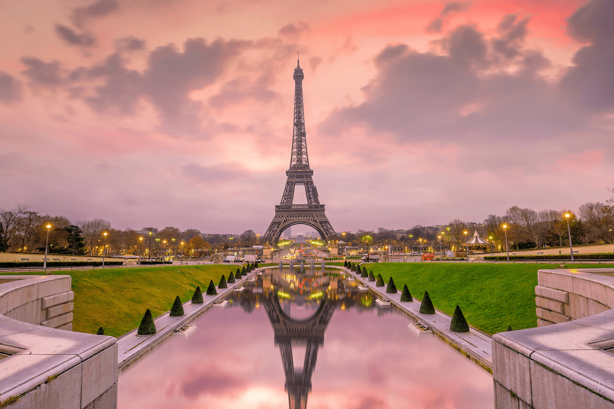

Paris é a capital da França e é famosa por ser linda, romântica e cheia de arte. Lá você pode ver a Torre Eiffel, visitar museus incríveis como o Louvre, comer comidas deliciosas e passear por ruas super charmosas. É um lugar ótimo pra quem gosta de cultura, história e belas paisagens. Clique em saiba mais
Torre Eiffel
Museu do Louvre
Catedral de Notre-Dame